| San Marino | La Grotta Hotel — júl. 12. | |
| Puglia | Masseria Salamina, Fasano — júl. 13–17. | |
| Gargano | Agriturismo Passione Natura, Vieste — júl. 17–20. | |
| Emilia | Agriturismo La Cascinetta, Pieve di Cento — júl. 20–22. | |
| Össztávolság | ~3 300 km |
🍽️ Étkezés: reggeli a szálláson; ebéd könnyű (sandwich/snack); vacsora étterem vagy gyors hely — minden napnál 2-3 családbarát ajánló, linkkel. ⏱️ Gyerek-tempó: városnézés max 2–3 óra, utána medence/strand. 💶 Készpénz: max 50-es címlet. ⚠️ ZTL (Zona a Traffico Limitato): az olasz belvárosokba tilos behajtani — mindig kívül parkolj.
| Cím | Contrada Santa Croce 17 |
|---|---|
| Típus | 3* superior, óváros |
| Booking | Booking.com |
🅿️ A hotel ZTL-ben van, autóval nem megközelíthető — parkolj a P6/P7 közparkolóban (100 m, 1,50 €/óra, 8 €/nap, foglalás nincs, automata jegy).
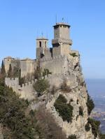
| Típus | 17. sz. masseria, medence |
|---|---|
| Strand | Torre Canne 5 perc |
| Értékelés | 9,9/10 |
| Weboldal | masseriasalamina.com |
| Booking | Booking.com |
🅿️ Ingyenes parkolás a birtokon.
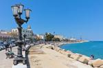
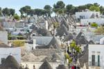
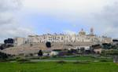
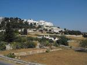
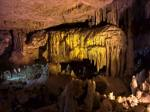
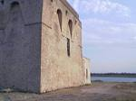
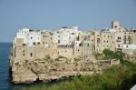
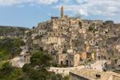
| Cím | Località Zingarelle, Vieste |
|---|---|
| Típus | agriturismo, vidéki tanya |
| Konyha | Marianna & Chef John Davy — km-0 bio |
| Weboldal | agriturismopassionenatura.com |
| Booking | Booking.com |
🅿️ Parkolás a helyszínen.
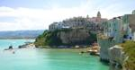
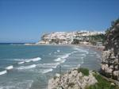
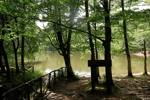
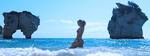
| Cím | Via Carbonara 19, Pieve di Cento |
|---|---|
| Típus | agriturismo, medence |
| Elhelyezkedés | ~20 km Bolognától É |
| Booking | Booking.com |
🅿️ Parkolás a helyszínen.
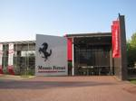
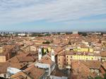
Helyi blogok és fórumok (Rick Steves, TripAdvisor, olasz utazói közösségek, Awesome Puglia, Mom In Italy) alapján, 2025–2026.
| # | Tipp | Miért |
|---|---|---|
| 1 | Alberobello → 9:00 előtt | 10 után turistabuszok árasztják el; a Rione Aia Piccola a hiteles negyed |
| 2 | Polignano → 8:30 előtt | a Lama Monachile reggel üres, ingyenes állomási parkoló (Retro Stazione) 9:30-ra tele; Balconata sul Mare (Via Porto) ingyenes kilátó |
| 3 | Matera → 7–9 közt a Sassiban | csoportok 10 után jönnek; déli hőség 34–38°C |
| 4 | Castellana → online Family jegy | ~61 € (2+2) a helyszíni ~94 € helyett; bent 16–18°C |
| 5 | Vignanotica → vízicipő + korán | sziklás ösvény; délre teli parkoló |
| 6 | Torre Guaceto → reggel 9-re | sekély, gyerekbarát, védett; délre zsúfolt; van ingyenes spiaggia libera |
| 7 | Cisternino fornello → este | 19–21 közt a legjobb hangulat; bombetta, gnummaredda faszénen |
| 8 | Foresta Umbra → Laghetto | ingyenes, hűs (24°C), teknőcetetés — vigyetek kenyeret |
| 9 | Tengeri barlangtúra → szelet nézd | maestrale esetén nem indul — rugalmasan tervezd |